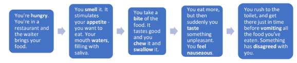

Asking about health
Health is the state of the body. When doctors want to know about a patient's usual health, they ask questions such as: "What is your general health like?" or "How is your health, generally?"
If you are in good health, you are well. Being healthy means you can resist illness, while being fit implies you are both well and strong.
Synonym Collection
Find medical and common synonyms for "ill" and "not ill".
Sickness
Sickness has a similar meaning to illness. It is also used in the names of a few specific diseases, for example sleeping sickness and travel sickness.
Patients also talk about sickness when they mean nausea and vomiting. The combination "sickness and diarrhoea" means vomiting and diarrhoea.
What can the patient mean?
Analyze statements like "I was sick this morning" to find the possible meaning.
Recovery
When patients return to normal health after illness, they have recovered. We can also say the patient made a good recovery.
If a patient's health is in the process of returning to normal, the patient is improving. The opposite is deteriorating. We often use the verb get to talk about change:
- Get over (an illness): To recover.
- Get better: To improve.
- Get worse: To deteriorate.
If a patient is better, but then gets worse again, the patient has relapsed. Another word for improvement, especially in recurring conditions such as cancer, is remission.
Healthy Living Advice pt. 1
What advice would you give people to keep fit and well?
Healthy Living Advice pt. 2
Choose the correct word to complete each sentence.
Functions of the Body - Eating
The smell of food stimulates your appetite. Your mouth starts filling with saliva. You chew the food and swallow it.
If something disagrees with you, you may feel nauseous and vomit.

The Five Senses
In addition to smell and taste, the senses include sight (or vision), hearing, and touch (also called sensation or feeling). To ask about the senses, doctors use the questions: To ask about the sense of touch, doctors talk about numbness (loss of sensation):
Clinical Symptom Matching
Fill in the table with an appropriate expression.
Other functions
Fill in the table with the right form or expression.
Communication Focus
It is very important to show people when you are saying an opinion and show that it is not a fact. Giving an opinion as a fact is not very polite in the UK.
Agreeing and Disagreeing
- I reckon...: A casual way to give an opinion.
- Personally, I think...: A polite way to show it's your view alone.
- I'm afraid I don't agree: A polite way to disagree.
- I couldn't agree more: Strong agreement.
Symptoms and Questions
Match the medical symptoms (dysuria, dysphagia, etc.) to the correct doctor's questions (a—e).
Describing Symptoms
Complete the patients' sentences based on their diagnosed conditions shown in the brackets. Type your answers and let the AI evaluate your medical vocabulary!
Body Functions Expressions
Choose the correct expression from the brackets (e.g., bite/chew, pass/have) to complete the sentences below.
GROUP WORK – ALLERGENS
What would life be like if you were allergic to these things? What would you do? Complete this table with your partner(s). Share with the other groups what you wrote.
| Allergen | What life would be like | What you would do |
|---|---|---|
| Computers | ||
| Chocolate | ||
| Shopping malls | ||
| Paper | ||
| Flowers | ||
| Plastic |
Unit 2 Final Review
Check your understanding of health, recovery, and bodily functions.
Before Listening
Read the statements about allergies and guess if they are True or False before listening to the audio track.
Unit 2 Final Review
Check your understanding of health, recovery, and bodily functions.
Unit 2 Final Review
Check your understanding of health, recovery, and bodily functions.
Unit 2 Final Review
Check your understanding of health, recovery, and bodily functions.
Giving your opinion
Expressions to use in speaking and writing. We often give our opinions to friends and colleagues.
Asking for approval
Sometimes we are not sure if it's a good idea to do something. So we need useful expressions for asking if other people agree with an idea or intended action.
Disagreeing with people
Sometimes people give an opinion and you don't agree with it. We have many ways to show disagreement in English. Here are ten of them.
ROLE PLAY:
In your group prepare a debate about the given topic below using the expressions from above.